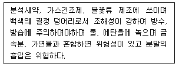
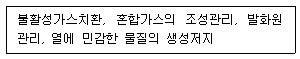
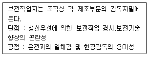

위험물기능장 (2005-04-03 기출문제)
1과목: 임의구분
1. 아세톤의 성질에 대한 설명으로 옳지 않은 것은?
- 보관 중 청색으로 변한다.
- 요오드포름 반응을 일으킨다.
- 아세틸렌 저장에 이용된다.
- 유기물을 잘 녹인다.
(정답률: 75%)

2. 제4류 위험물을 취급하는 제조소 등이 있는 동일한 사업소에서 지정수량의 몇 배 이상인 경우에 자체소방대를 설치하여야 하는가?
- 1000배
- 3000배
- 5000배
- 10000배
(정답률: 85%)
3. 가연물의 구비조건으로 거리가 먼 것은?
- 열전도도가 적을 것
- 연소열량이 클 것
- 완전산화물일 것
- 점화에너지가 적을 것
(정답률: 74%)
4. 다음 기체 중 화학적 성질이 다른 것은?
- 질소
- 불소
- 아르곤
- 이산화탄소
(정답률: 73%)
5. 이동탱크저장소에 설치하는 방파판의 기능에 대한 설명으로 가장 적절한 것은?
- 출렁임 방지
- 유증기 발생의 억제
- 정전기 발생 제거
- 파손 시 유출 방지
(정답률: 89%)
6. 위험물제조소와의 안전거리가 30m 이상인 시설은?
- 주거 용도로 사용되는 건축물
- 도시가스를 저장 또는 취급하는 시설
- 사용전압 35,000V 를 초과하는 특고압가공전선
- 초·중등교육법에서 정하는 학교
(정답률: 88%)
7. 다음에서 설명하는 위험물은?

- 염소산칼륨
- 과염소산마그네슘
- 과산화나트륨
- 과산화수소
(정답률: 52%)
8. 염소산칼륨(KClO3)의 분자 결정 구조 형태는?
- 입방정계(Cubic)
- 정방정계(Tetragonal)
- 사방정계(Orthorhombic)
- 단사정계(Monoclinic)
(정답률: 63%)
9. 전역방출방식의 분말 소화설비에서 제3종 분말 소화약제에 대한 방호구역의 체적 1m3 당 소화약제의 양은?
- 0.06kg
- 0.16kg
- 0.24kg
- 0.36kg
(정답률: 47%)
10. 아염소산나트륨의 위험성에 대한 설명으로 가장 거리가 먼 것은?
- 단독으로 폭발 가능하고 분해온도 이상에서는 산소를 발생한다.
- 비교적 안정하나 시판품은 140℃ 이상의 온도에서 발열반응을 일으킨다.
- 유기물, 금속분 등 환원성 물질과 접촉하여 자극하면 즉시 폭발한다.
- 수용액 중에서 강력한 환원력이 있다.
(정답률: 78%)
11. 운송책임자의 감독·지원을 받아 운송하여야 하는 위험물은?
- 칼륨
- 히드라진유도체
- 특수인화물
- 알킬리튬
(정답률: 81%)
12. 자연발화성물질에 대한 가장 옳은 설명은?
- 고체 또는 액체로서 공기 중에서 발화의 위험성이 있는 것
- 고체 또는 액체로서 물 속에서 발화의 위험성이 있는 것
- 고체로서 공기 중에서 발화의 위험성이 있는 것
- 고체로서 공기와 접촉하여 발화하거나 가연성 가스의 발생 위험성이 있는 것
(정답률: 78%)
13. 오존파괴지수의 약어는?
- CFC
- ODP
- GWP
- HCFC
(정답률: 92%)
14. 가연성 혼합기체에 전기적 스파크로 점화 시 착화하기 위하여 필요한 최소한의 에너지를 최소착화에너지라 하는데 최소착화에너지를 구하는 식을 옳게 나타낸 것은? (단, C=콘덴서의용량, V=전압, T=전도율, F=점화상수이다.)
- FVT2
- FCV2
- 1/2CV2
- CV
(정답률: 83%)
15. 벤젠핵에 메틸기 한개가 결합된 구조를 가진 무색 투명한 액체로서 방향성의 독특한 냄새를 가지고 있는 물질은?
- C6H5CH3
- C6H5(CH3)2
- CH3COCH3
- HCOOCH3
(정답률: 78%)
16. 다음 중 지정수량이 다른 것은?
- 금속의 인화물
- 질산염류
- 과염소산
- 과망간산염류
(정답률: 72%)
17. 옥외탱크저장소의 방유제 설치기준으로 옳지 않은 것은?
- 방유제의 용량은 방유제안에 설치된 탱크가 하나인때는 그 탱크의 용량의 110% 이상으로 한다.
- 방유제의 높이는 0.5m 이상 3m 이하로 하여야 한다.
- 방유제내의 면적은 8만m2 이하로 하고 물을 배출시키기 위한 배수구를 설치 한다.
- 높이가 1m 를 넘는 방유제의 안팎에 폭 1.5m 이상의 계단 또는 15°이하의 경사로를 20m 간격으로 설치한다.
(정답률: 82%)
18. 제품의 상처나 오염으로부터 보호하며 실험실 작업이나 작은 부품의 취급에 쓰이는 비닐함침 장갑의 재료는?
- 부나 - N
- 폴리에틸렌
- 부틸고무
- 네오프렌
(정답률: 80%)
19. 가연성가스의 위험성이 증가하는 경우가 아닌 것은?
- 비점이 높을수록
- 연소범위가 넓을수록
- 착화점이 낮을수록
- 점도가 낮을수록
(정답률: 76%)
20. 지정 과산화물을 옥내에 저장하는 저장창고 외벽의 기준으로 옳은 것은?(오류 신고가 접수된 문제입니다. 반드시 정답과 해설을 확인하시기 바랍니다.)
- 두께 20cm 이상의 보강콘크리트블록조
- 두께 20cm 이상의 철근콘크리트조
- 두께 30cm 이상의 철근콘크리트조
- 두께 30cm 이상의 철골콘크리트블록조
(정답률: 63%)
2과목: 임의구분
21. 다음 유지류 중 요오드값이 가장 큰 것은?
- 돼지기름
- 고래기름
- 소기름
- 정어리기름
(정답률: 92%)
22. 위험물을 취급하는 제조소 등에서 지정수량의 몇 배 이상인 경우 경보설비를 설치하여야 하는가?
- 1배 이상
- 5배 이상
- 10배 이상
- 100배 이상
(정답률: 83%)
23. 자동화재탐지설비의 설치기준 중 하나의 경계구역의 면적은 얼마 이하로 하여야 하는가?
- 100mm2
- 300m2
- 600m2
- 900m2
(정답률: 78%)
24. 다음 청정소화약제 중 종류가 다른 하나는?
- 트리플루오르메탄
- 퍼플루오르부탄
- 펜타프루오르에탄
- 헵타플루오르프로판
(정답률: 80%)
25. 옥외탱크저장소의 펌프설비 설치기준으로 옳지 않은 것은?
- 펌프실의 지붕은 위험물에 따라 가벼운 불연재료로 덮어야 한다.
- 펌프실의 출입구는 갑종방화문 또는 을종방화문을 사용한다.
- 바닥의 주위에는 높이 0.2m 이상의 턱을 만들어야한다.
- 지정수량 20배 이하의 경우에는 주위에 너비 3m의 공지를 보유하지 않아도 된다.
(정답률: 65%)
26. 과산화나트륨(Na2O2)의 저장법으로 가장 옳은 것은?
- 유기물질, 황분, 알루미늄분 등의 혼입을 막고 수분이 들어가지 않게 밀전 및 밀봉 하여야 한다.
- 유기물질, 황분, 알루미늄분 등의 혼입을 막고 수분에 관계없이 저장해도 좋다.
- 유기물질, 황분, 알루미늄분 등의 혼입과 관계없이 수분만 들어가지 않게 밀전 및 밀봉하여야 한다.
- 유기물질과 혼합하여 저장해도 좋다.
(정답률: 90%)
27. 다음에 나열한 폭발 예방대책을 강구하여야 하는 폭발의 종류는?

- 누설파괴형 폭발
- 반응폭주형 폭발
- 평형파탄형 폭발
- 착화파괴형 폭발
(정답률: 51%)
28. 주유취급소의 건축물 중 내화구조를 하지 않아도 되는 곳은?
- 벽
- 바닥
- 기둥
- 창
(정답률: 86%)
29. 배관의 종류 중 내식성이 요구되는 화학공장, 폐수시설 등의 저온 배관에 사용하는 강관은?
- 주철관
- 고압 배관용 탄소강 강관
- 압력 배관용 탄소강 강관
- 스테인레스 강관
(정답률: 87%)
30. 옥외탱크저장소의 주위에는 저장 또는 취급하는 위험물의 최대수량에 따라 보유공지를 보유하여야 하는데 다음 기준 중 옳지 않은 것은?
- 지정수량의 500배 이하 - 3m 이상
- 지정수량의 500배 초과 1,000배 이하 - 6m 이상
- 지정수량의 1,000배 초과 2,000배 이하 - 9m 이상
- 지정수량의 2,000배 초과 3,000배 이하 - 12m 이상
(정답률: 70%)
31. 염소화규소화합물은 제 몇류 위험물에 해당되는가?
- 제1류
- 제2류
- 제3류
- 제5류
(정답률: 79%)
32. 다음 옥내탱크저장소 중 소화난이도 등급 Ⅰ에 해당하지 않는 것은?
- 액표면적이 40m2 이상인 것
- 바닥면으로부터 탱크 옆판의 상단까지 높이가 6m 이상인 것
- 액체위험물을 저장하는 탱크로서 지정수량이 100배 이상인 것
- 탱크전용실이 단층건물 외에 건축물에 있는 것
(정답률: 52%)
33. 어떤 위험물은 분해시 수소가 발생되어 시설에 영향을 미칠 수 있는데, 수소가 강에 미치는 영향으로 옳지 않은 것은?
- 수소취성에는 탄소강이 적당하다.
- 고압에서도 170℃, 250 기압에서는 수소에 연강재를 사용할 수 있다.
- 내수소취성을 높이는 재료로는 V, W, Ti 등이 좋다.
- 합금강에서도 니켈강은 메탄화반응을 촉진하는 촉매가 되기 때문에 부적당하다.
(정답률: 53%)
34. 제6류 위험물의 일반적인 성질에 대한 설명으로 가장 거리가 먼 것은?
- 모두 무기화합물이며 물에 녹기 쉽고, 물 보다 무겁다.
- 모두 강산에 속한다.
- 모두 산소를 함유하고 있으며 다른 물질을 산화 시킨다.
- 자신은 모두 불연성 물질이다.
(정답률: 67%)
35. 공기를 차단하고 황린이 적린으로 만들어지는 가열온도는 약 몇 ℃ 정도인가?
- 260
- 310
- 340
- 430
(정답률: 87%)
36. 다음 위험물 중 성상이 고체인 것은?
- 과산화벤조일
- 질산에틸
- 니트로글리세린
- 메틸에틸케톤퍼옥사이드
(정답률: 81%)
37. 가구나 도자기 같은 제품을 생산할 때의 생산방식으로 가장 적절한 것은?
- 프로젝트 생산방식
- 개별생산방식
- 로트생산방식
- 라인생산방식
(정답률: 61%)
38. 탄화칼슘과 질소가 약 700℃ 에서 반응하여 생성되는 물질은?
- C2H2
- CaCN2
- C2H4O
- CaH2
(정답률: 73%)
39. 제조소 등의 설치자가 그 제조소 등의 용도를 폐지할 때 폐지한 날로부터 몇일 이내에 신고(시·도지사에게)하여야 하는가?
- 7일
- 14일
- 30일
- 90일
(정답률: 85%)
40. 어떤 액체연료의 질량조성이 C: 80%, H: 20% 일 때 C/H의 mole 비는?
- 0.22
- 0.33
- 0.44
- 0.55
(정답률: 65%)
3과목: 임의구분
41. 다음 제4류 위험물 중 무색의 끈기있는 액체로 인화점이-18℃ 인 위험물은?
- 이소프렌
- 펜타보란
- 콜로디온
- 아세트알데히드
(정답률: 54%)
42. 이산화탄소 소화약제 사용 시 소화약제에 의한 피해도 발생할 수 있는데 공기 중에서 기화하여 기상의 이산화탄소로 되었을 때 인체에 대한 허용농도는?
- 100ppm
- 3000ppm
- 5000ppm
- 10000ppm
(정답률: 53%)
43. 다음 위험물 중 소화방법이 마그네슘과 동일하지 않은 것은?
- 알루미늄분
- 아연분
- 황분
- 카드뮴분
(정답률: 78%)
44. 제1종 소화분말인 탄산수소나트륨 소화약제에 대한 설명으로 옳지 않은 것은?
- 소화 후 불씨에 의하여 재연할 우려가 없다.
- 화재 시 방사하면 화열에 의하여 CO2, H2O, Na2CO3 를 발생한다.
- 화재 시 주로 냉각, 질식소화작용 및 부촉매소화작용을 일으킨다.
- 일반가연물 화재에는 적응할 수 없다는 단점이 있다.
(정답률: 55%)
45. 제3류 위험물에 대한 주의사항으로 거리가 먼 것은?
- 충격주의
- 화기엄금
- 공기접촉엄금
- 물기엄금
(정답률: 71%)
46. 위험물시설에 고정소화설비를 설치할 때 사용하는 가압송수장치의 종류가 아닌 것은?
- 펌프방식(내연기관 또는 전동기를 이용하는 방식)
- 중력을 이용한 고가수조방식
- 압력수조방식
- 소화수조방식
(정답률: 66%)
47. 니트로화합물류 중 분자구조 내에 히드록시기를 갖는 위험물은?
- 피크린산
- 트리니트로톨루엔
- 트리니트로벤젠
- 테트릴
(정답률: 74%)
48. 인화성액체 위험물 화재 시 소화방법으로서 가장 거리가 먼 것은?
- 화학포에 의해 소화할 수 있다.
- 수용성액체는 기계포가 적당하다.
- 이산화탄소 소화도 사용된다.
- 주수소화는 적당하지 않다.
(정답률: 62%)
49. 인화성액체위험물(이황화탄소를 제외한다)의 옥외탱크저장소 탱크 주위에 설치하여야하는 방유제 설치기준으로 옳지 않은 것은?
- 면적은 10만m2 이하로 할 것
- 높이는 0.5m 이상 3m 이하로 할 것
- 철근 콘크리트 또는 흙으로 만들 것
- 탱크의 수는 10 이하로 할 것
(정답률: 68%)
50. 밀폐장치내에서의 폭발은 폭발의 발생을 초기에 감지하여 연소억제제를 살포하는 것에 의해 화염을 소멸시키는 시스템인 폭발억제장치를 설치할 수 있다. 폭발억제장치의 구성으로 옳지 않은 것은?
- 폭발검출기구
- 억제제와 살포기구
- 제어기구
- 밀폐기구
(정답률: 69%)
51. 옥외저장소에 선반을 설치하는 경우에 선반의 설치높이는 몇 m 를 초과하지 않아야 하는가?
- 3
- 4
- 5
- 6
(정답률: 81%)
52. 분말소화약제의 가압용 가스로 질소를 사용하였을 때 소화약제 50kg 저장 시 질소 가스량은 35℃, 0MPa 의 상태로 환산하여 얼마인가? (단, 배관의 청소에 필요한 양은 제외한다.)
- 500ℓ
- 1,000ℓ
- 1,500ℓ
- 2,000ℓ
(정답률: 38%)
53. 다음 중 가장 약산은 어느 것인가?
- HClO
- HClO2
- HClO3
- HClO4
(정답률: 88%)
54. 다음 피복 재료 중 발화점이 가장 낮은 것은?
- 삼베
- 인견
- 견
- 털
(정답률: 72%)
55. 파레토그림에 대한 설명으로 가장 거리가 먼 내용은?
- 부적합품(불량), 클레임 등의 손실금액이나 퍼센트를 그 원인별, 상황별로 취해 그림의 왼쪽에서부터 오른쪽으로 비중이 작은 항목부터 큰 항목 순서로 나열한 그림이다.
- 현재의 중요 문제점을 객관적으로 발견할 수 있으므로 관리방침을 수립할 수 있다.
- 도수분포의 응용수법으로 중요한 문제점을 찾아내는 것으로서 현장에서 널리 사용된다.
- 파레토그림에서 나타난 1∼2개 부적합품(불량) 항목만 없애면 부적합품(불량)률은 크게 감소된다.
(정답률: 51%)
56. 다음 내용은 설비보전조직에 대한 설명이다. 어떤 조직의 형태인가?

- 집중보전
- 지역보전
- 부문보전
- 절충보전
(정답률: 78%)
57. 다음 중 검사를 판정의 대상에 의한 분류가 아닌 것은?
- 관리 샘플링검사
- 로트별 샘플링검사
- 전수검사
- 출하검사
(정답률: 83%)
58. 원재료가 제품화 되어가는 과정 즉 가공, 검사, 운반, 지연, 저장에 관한 정보를 수집하여 분석하고 검토를 행하는 것은?
- 사무공정 분석표
- 작업자공정 분석표
- 제품공정 분석표
- 연합작업 분석표
(정답률: 82%)
59. nP관리도에서 시료군마다 n=100 이고, 시료군의 수가 k=20이며, ΣnP = 77이다. 이때 nP관리도의 관리상한선 UCL을 구하면 얼마인가?
- UCL = 8.94
- UCL = 3.85
- UCL = 5.77
- UCL = 9.62
(정답률: 54%)
60. 수요예측 방법의 하나인 시계열분석에서 시계열적 변동에 해당되지 않는 것은?
- 추세변동
- 순환변동
- 계절변동
- 판매변동
(정답률: 68%)